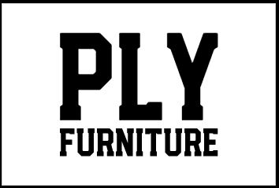
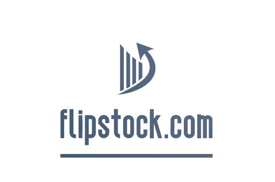
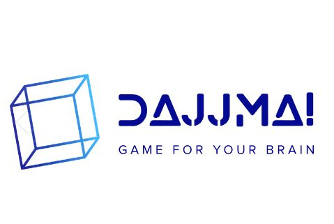

My Work
Check out some of my projects...

plyfurniture.net
Github
Languages: Mongo, Express, React, Node
The company I worked for had a furniture line called "Ply Furniture." I thought it would be cool to create an e-commerce site to advertise the products. This was a very in depth project that gained me a lot of experience working with the command line and Mongo DB. Deploying the site through Digital Ocean was a challenge but the process of working through deployment and addressing bugs was very valuable. The foundation of this site could easily be used as a template to build other e-commerce sites for different applications.
 Claire's E-commerce Store
Github
Claire's E-commerce Store
Github
Languages: Mongo, Express, React, Node
My daughter, Claire, wanted to create an e-commerce app and I wanted to start teaching her how to code! So, we dug into another Udemy tutorial and created this app. The tutorial was 15 hours in total length and I watched most of it 2-3 times to try to understand fully how everything worked. It was a great experience to learn and to begin to introduce programming concepts to my daughter. I am convinced whe will start the next Facebook!

flipstock.com
Github
Languages: PHP, CSS, JavaScript
I am very interested in investing. Every night I review watchlists I have set up through an app on my phone called "Stock Tracker". I wanted to find a way to compare the watchlists over time to pick up on trends. So, not unlike most people, I simply went to Udemy and banged out an 18.5 hour tutorial called "Make a YouTube Clone from Scratch" so that I could post videos of my watchlists spanning over several days. I realize that these videos might be a little boring, but I envision this website as an online collaboration tool where stock market enthusiasts post videos of research and ideas to share with others.

Dajjma
Github